35 New Hairstyles For Men in 2021
It’s time to look at the best new hairstyles for men in 2021. Many of the cool, trendy men’s hairstyles of earlier years will likely carry over to the new year, meaning that the most popular haircuts will likely continue to be fades, undercuts, pompadours, comb overs, quiffs, slick backs, and even man buns or top knots, if you can pull them off.
More specifically, expect a lot of “short sides, long top” hairstyles which combine a low or high fade with textured hair on top. Perfect example would be the disconnected undercut, modern pompadour, slick back fade or cropped hair, all of which are included below. However, be on the look out for longer styles that are worn textured and loose.
Looking around the fashion industry, here are the latest and most popular new hairstyles for guys.
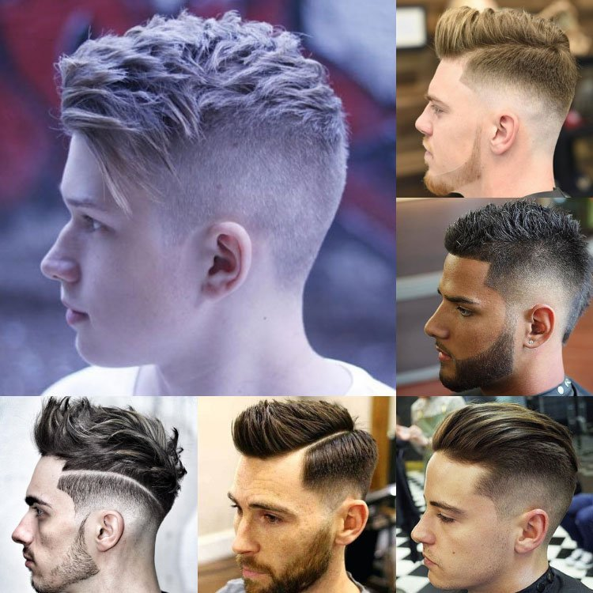
1. Low Fade with Long Fringe
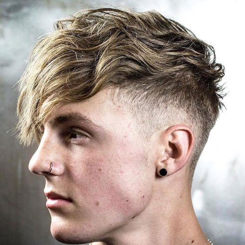
Longer styles have been a popular trend this year. This thick and textured fringe on top is coupled with a low taper fade on the sides for a stylish look. And with just enough length on top to let your hair become wavy, we highly recommend this cool men’s haircut for young guys!
2. High Fade with Fohawk and Design
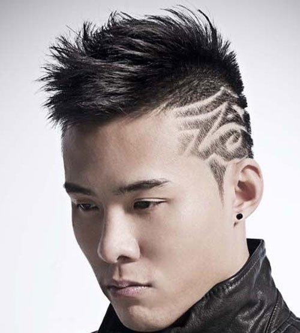
There are endless variations of hair designs, but this one is paired with an awesome fade haircut. What makes the fade so cool is how versatile yet low maintenance it is. Whether you pick a high, mid, low, bald, or taper on the sides, a fade works well with any modern short cut for men.
3. High Fade with Loose Pompadour
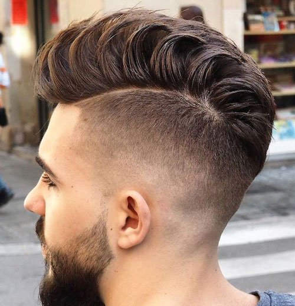
Getting the pompadour haircut is easy, and requires only a good pair of clippers and 3 to 5 inches of hair on top. For the sides, guys can get a fade or undercut. Styling your pomp will require a quality pomade or wax, allowing you to add height and style. This pompadour incorporates a clean skin faded undercut and a full beard.
4. High Fade with Hard Part and Quiff
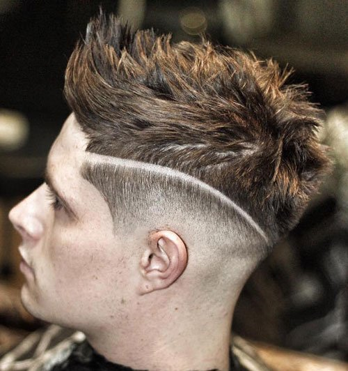
To get the quiff, you will need at least 3 inches of hair on top of your head. The sides will then be buzzed into a taper fade – how short is up to you. Guys have the option of a high, low, mid, or skin fade. For an extreme look, a very short clipper setting will create a lot of contrast, while those wanting a classic look can choose a gentler taper.
5. Long Messy Hair with Low Fade
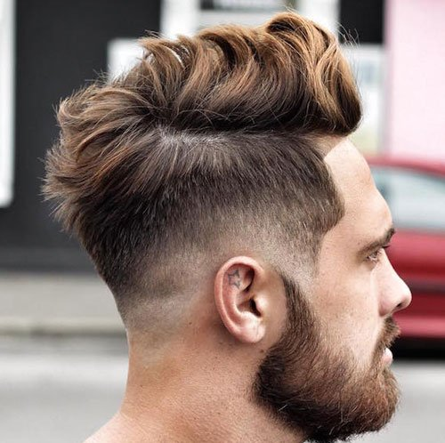
This fresh low bald fade and line up balance the messy, textured hairstyle up top. By working a small amount of pomade into your hair, guys can create a natural look that stays in place all day.
6. Braided Razor Part with Pompadour
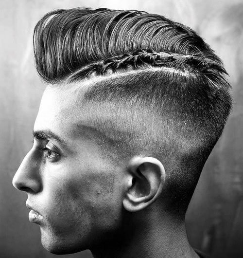
With enough length, any section of your hair can be braided. While braided hair is a unique style, it can add some flair. This pompadour combines high skin fade, thick razor par, and some braided hair.
7. Man Bun and Beard
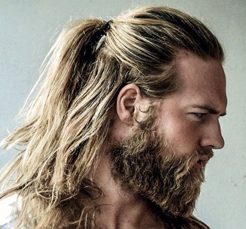
The man bun’s popularity has slowly waned, but that doesn’t mean you shouldn’t get the look if you have long hair. Paired with a beard, the man bun hairstyle looks masculine and strong.
8. High Bald Fade with Cropped Fringe
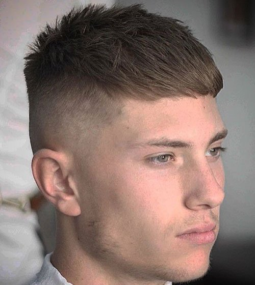
As one of the newest men’s haircuts to hit the scene, this cropped fringe features a high bald fade. Styled in a natural, textured way, this hairstyle is good for guys of any hair type, including fine or thin hair.
9. Short Sides with Medium Length Hair on Top
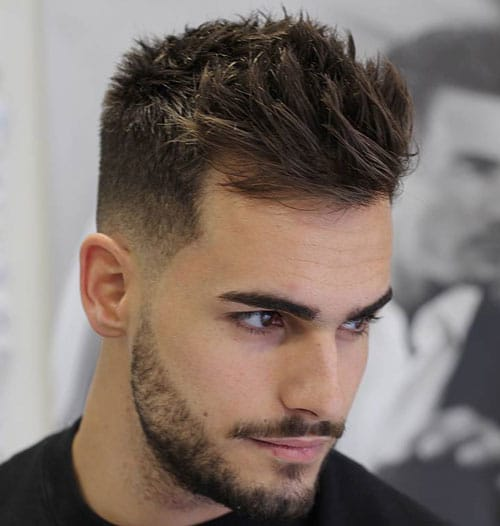
This low skin fade is combined with a spiky side swept fringe and short textured hair in the back. Coupled with a cool beard, this look will make the girls swoon.
10. Classic Short Hair with High Skin Fade and Crew Cut
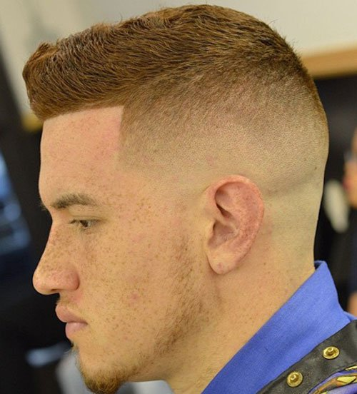
The crew cut is another short hairstyle that’s stylish yet easy to maintain. The high skin fade and line up also make this a clean look.
11. Slicked Back Hair with Short Sides
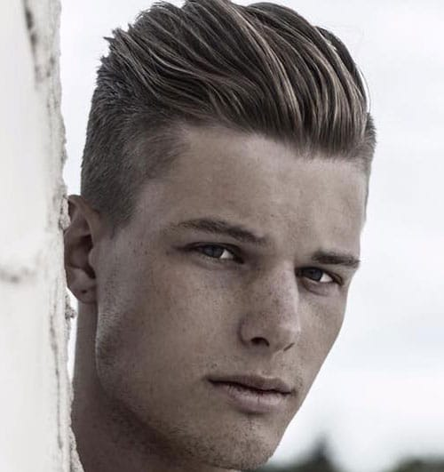
The slick back has traditionally been a retro style, but the modern version works best worn loose and textured.
12. Modern Faux Hawk with Low Burst Fade
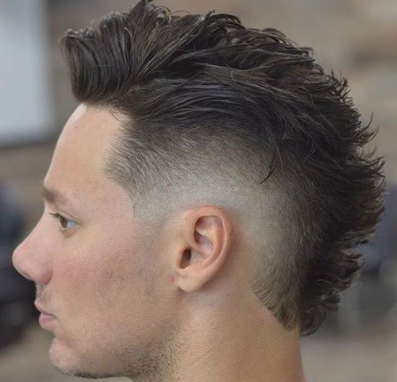
Depending on how extreme you want your fohawk hairstyle to look, the sides should be clipped between a number 2 and 5, or simply trimmed shorter with scissors. Styling the faux hawk requires some gel or pomade in order to create the point in the middle of the head. Comb product through your hair in an upwards motion, and then press it together until it forms the style you want.
13. Hard Part Pompadour with Mid Bald Fade
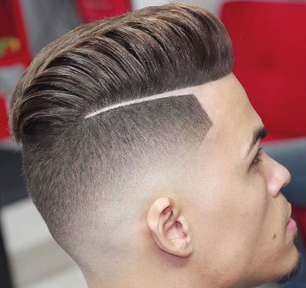
A hard part or line adds something extra to any haircut. This fresh mid bald fade cut comes out perfect next to a hot pompadour on top.
14. Low Fade with Thick Long Hair Quiff
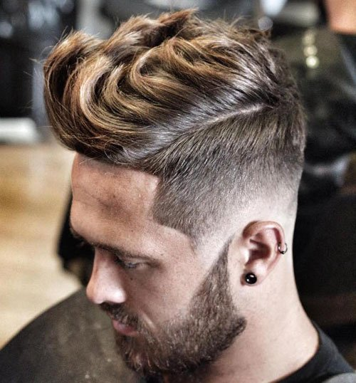
The quiff has been trending higher as of late, and it’s easy to see why. The trendy hairstyle works for every hair type, from straight to curly, and looks great when styled up and natural.
15. Top Knot Undercut with Cool Design
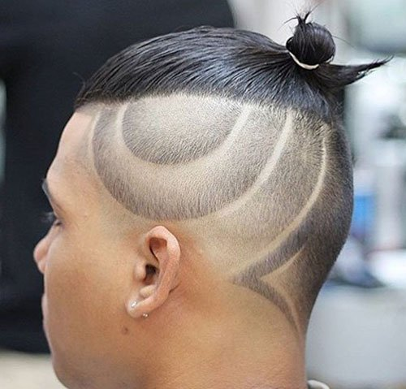
While the top knot is mostly a hipster or Millennial style, if you have the hair for it, you should definitely try this cut and style. With shaved sides or a design, the ponytail offers a different style.
16. Mid Fade with Side Part and Long Fringe
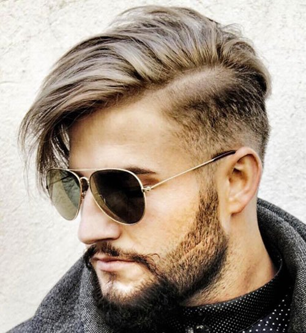
The side part haircut, like a comb over, is a classic look that every barber knows how to cut and style. This particular example comes with medium length hair on top, a hard part, mid fade, and full facial hair!
17. Mohawk with Line In Hair
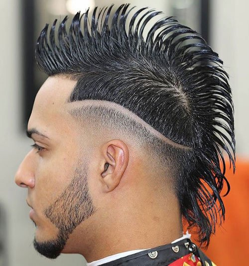
The mohawk fade has been getting more attention this year. While some mohawks are extreme, there are new variations that are more subtle.
18. Tall Thick Spiky Hair on Top
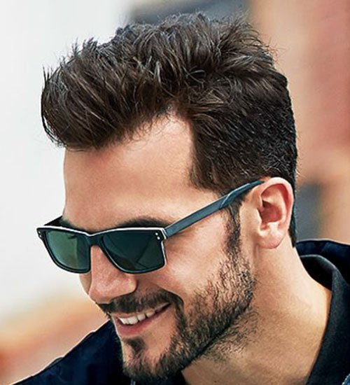
Spiky hair continues to be a simple yet sexy style guys can get any morning. And with classic tapered sides, this look is versatile enough to be styled many different ways.
19. Low Skin Fade with Long Wavy Hair
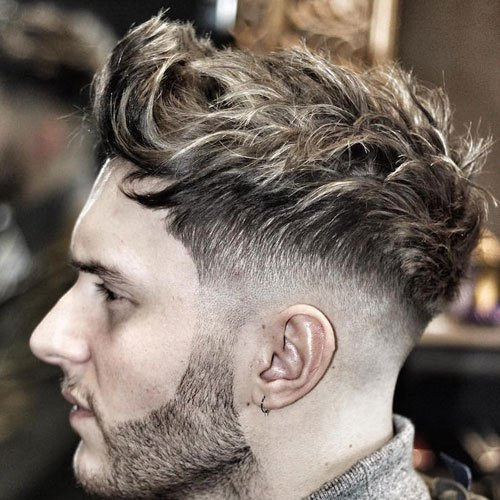
20. Side Quiff with Classic Tapered Sides
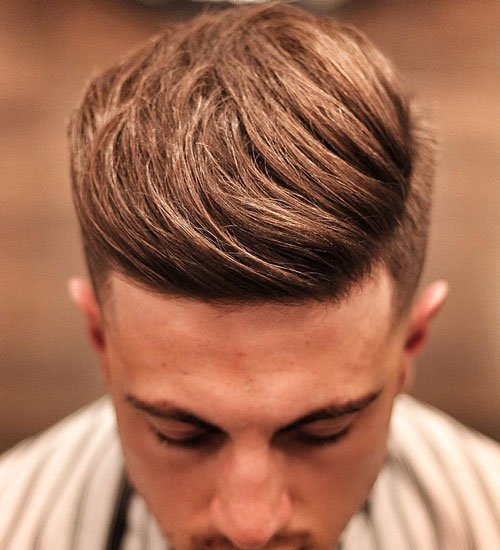
21. Classic Pompadour with Taper Fade
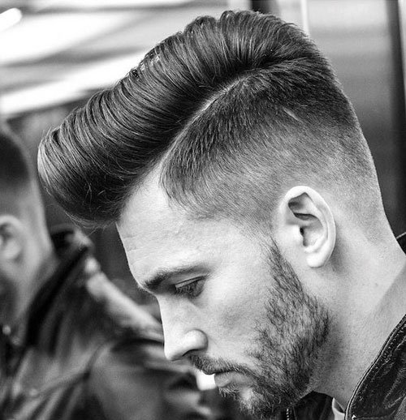
22. Classic Messy Long Hair with Thick Beard
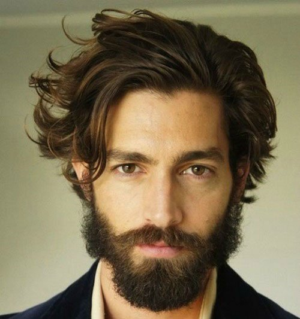
23. High Fade with Hard Part and Curly Hair
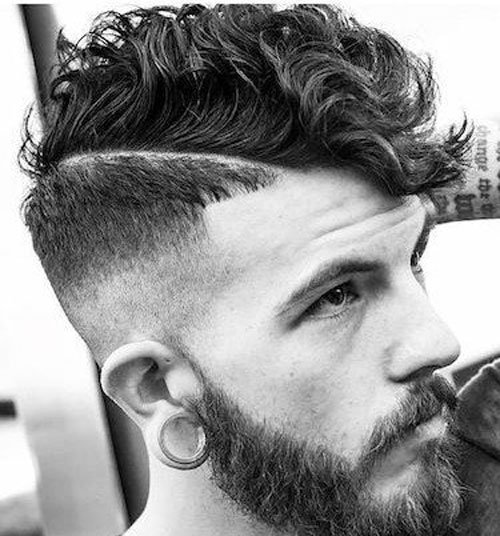
24. Curly Hair Undercut
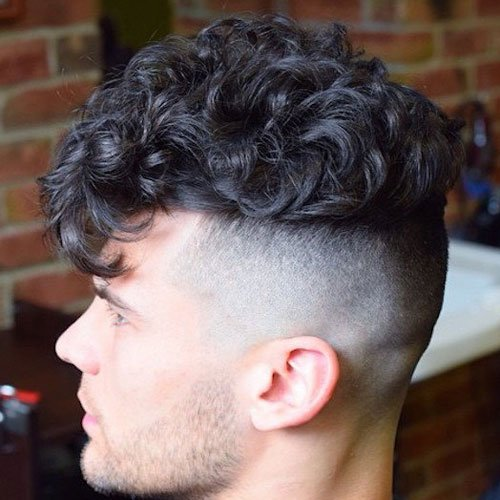
25. Slicked Back Undercut with Long Hair
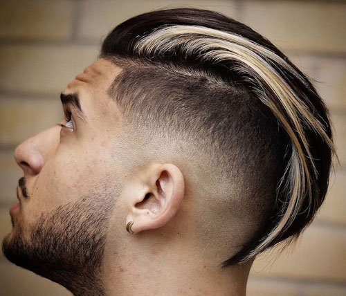
26. High Fade Comb Over
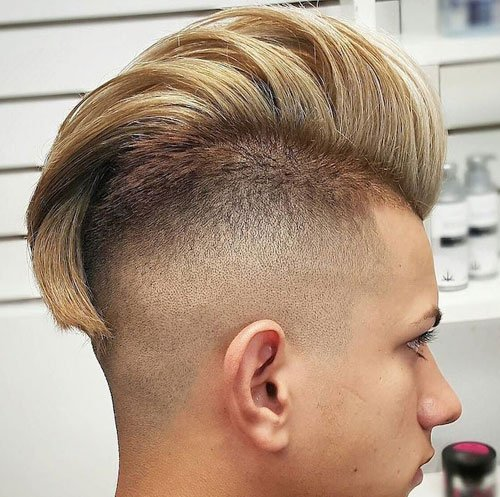
27. Skin Fade with Solid Fringe
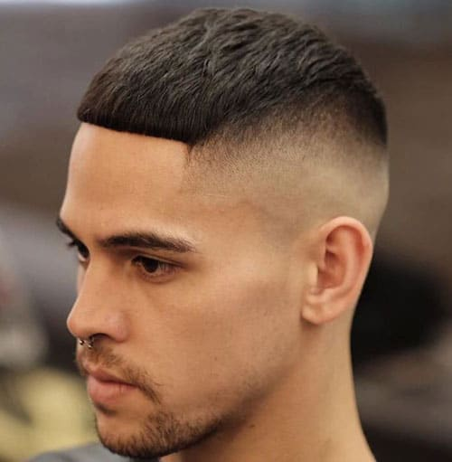
28. Faux Hawk with Burst Fade and Shape Up
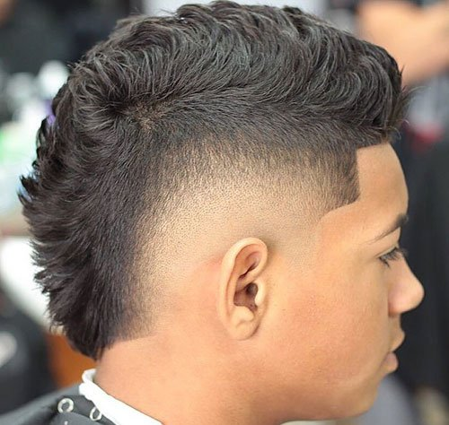
29. Bald Fade with Long Natural Curls on Top
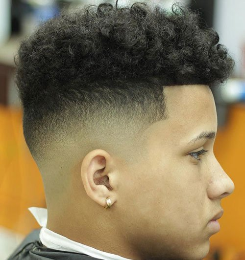
30. High Fade with Braids and Long Spiked Hair
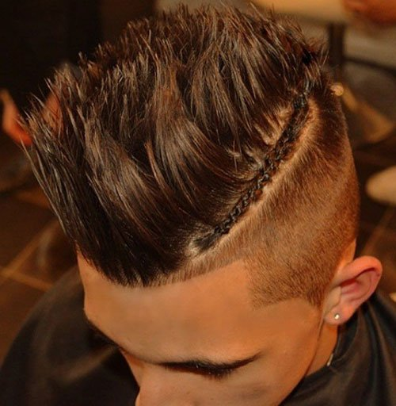
31. Layered Messy Long Hair
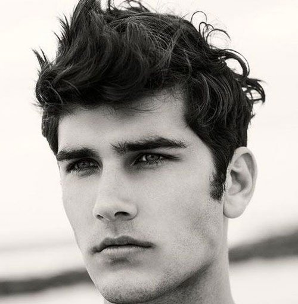
32. Frohawk
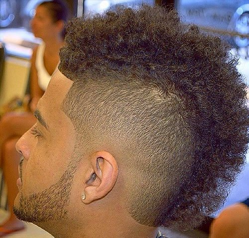
33. Buzz Cut with Beard
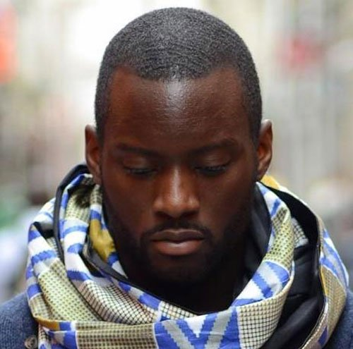
34. Long Hair Undercut
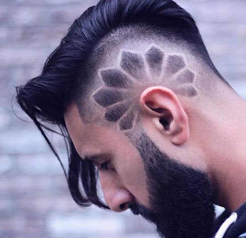
35. Man Bun with Beard
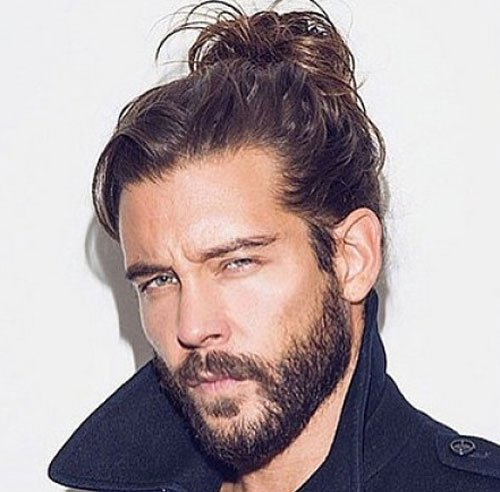